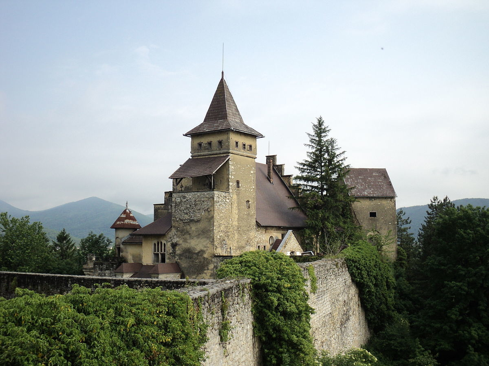

Šta vidjeti?
Top atrakcije za posjetiti prilikom posjete Bihaću.

Džamija Fethija

Ostrožac-Kula

Top atrakcije za posjetiti prilikom posjete Bihaću.
Ovo je jedna od najljepših džamija na koje ćete naići, a super je stara - datira iz oko 1266. Džamija je bila bivša crkva, nazvana Crkva Svetog Ante. Izgrađena je u tipičnom gotičkom arhitektonskom stilu; međutim, kada su Osmanlije zauzele grad u 1500-ima, pretvoren je u džamiju.
Dizajn još uvijek sadrži mnoštvo starih crkvenih obilježja, ali postoji fascinantan spoj dviju religija kada uđete unutra. Džamija je vrlo centralno smještena, tako da je svakako potrebno posjetiti dok razgledavate središte grada.
U slikovitom selu Ostrožac, nedaleko od centra Bihaća, pronaći ćete dvorac Ostrožac. Ovaj dvorac seže u 16. stoljeće, a sagradili su ga Osmanlije. Smješten visoko na brdu, ovo je definitivan trenutak za fotografiju, a ako ga posjetite tokom ljetnih mjeseci, možete uživati u neobičnom koncertu i zabavnoj emisiji uživo, pa pripazite na ljetni kalendar.
Ako ste ljubitelj istorije i mitologije, tada je Kapetanov toranj ili Kapetanova Kula za vas. Ovo je jedna od najstarijih zgrada u gradu, a oko nje se vrti poznata legenda. Kaže se da je, dok je Bihać bio mlad, u rukama Austro-Ugarske carevine, sama kula bila odgovorna za spas kralja Bele IV., Koji se u kuli skrivao od konjanika koji su imali očigledan zadatak da ga otmu. Kula je danas muzej povijesti Bihaća i otvorena je šest dana u sedmici, a nalazi se na listi nacionalnih spomenika Bosne i Hercegovine.
Najpoznatije mjesto u nacionalnom parku je Štrbački buk, prekrasni vodopad koji se spušta u tirkizne vode. Možete pješačiti, brdskim biciklom, šetati ili jednostavno uzeti piknik pored vodopada i uživati u krajoliku. Kroz park prolazi Zelena staza Via Dinarica, tako da možete obuti udobne cipele za šetnju i istražiti.